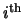
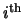

As an example of the use of the library functions, Figure 3.1 shows the code for implementing a generic MILP solver with default parameter settings.
To read in an MPS file called sample.mps and solve it using this program, the following command would be issued:symphony -F sample.mpsThe user does not have to invoke a command to read the MPS file. During the call to sym_parse_command_line(), SYMPHONY determines that the user wants to read in an MPS file. During the subsequent call to sym_load_problem(), the file is read and the problem data stored. To read an GMPL file, the user would issue the command
symphony -F sample.mod -D sample.datAlthough the same command-line switch is used to specify the model file, the additional presence of the -D option indicates to SYMPHONY that the model file is in GMPL format and GLPK's GMPL parser is invoked [27]. Note that the interface and the code of Figure 3.1 is the same for both sequential and parallel computations. The choice between sequential and parallel execution modes is made at compile-time through modification of the makefile or the project settings, depending on the operating system.
To start the solution process from a warm start, the sym_warm_solve() command is used. SYMPHONY automatically records the warm start information resulting from the last solve call and restarts from that checkpoint if a call to sym_warm_solve() is made. Alternatively, external warm start information can be loaded manually. Figure 3.2 illustrates the use of the re-solve capability by showing the code for implementing a solver that changes from depth first search to best first search after the first feasible solution is found.
The user can also modify problem data in between calls to the solver. Code for doing so is shown in Figure 3.3. In this example, the solver is allowed to process 100 nodes and then save the warm start information. Afterward, the original problem is solved to optimality, then is modified and re-solved from the saved checkpoint.
Finally, SYMPHONY now also has a bicriteria solve call. The applications of
such a solver are numerous. Besides yielding the ability to closely examine
the tradeoffs between competing objectives, the method can be used to perform
detailed sensitivity analysis in a manner analogous to that which can be done
with simplex based solvers for linear programs. As an example, suppose we
would like to know exactly how the optimal objective function value for a
given pure integer program depends on the value of a given objective function
coefficient. Consider increasing the objective function
coefficient of variable  from its current value. Taking the first objective
function to be the original one and taking the second objective function to be
the
 unit vector, we can derive the desired sensitivity
function by using the bicriteria solution algorithm to enumerate all supported
solutions and breakpoints. This information can easily be used to obtain the
desired function. Figure 3.4 shows the code for performing
this analysis on variable 0.
from its current value. Taking the first objective
function to be the original one and taking the second objective function to be
the
 unit vector, we can derive the desired sensitivity
function by using the bicriteria solution algorithm to enumerate all supported
solutions and breakpoints. This information can easily be used to obtain the
desired function. Figure 3.4 shows the code for performing
this analysis on variable 0.
In addition to the parts of the API we have just described, there are a number of standard subroutines for accessing and modifying problem data and parameters. These can be used between calls to the solver to change the behavior of the algorithm or to modify the instance being solved. These modifications are discussed in more detail in Section 4.2.1.